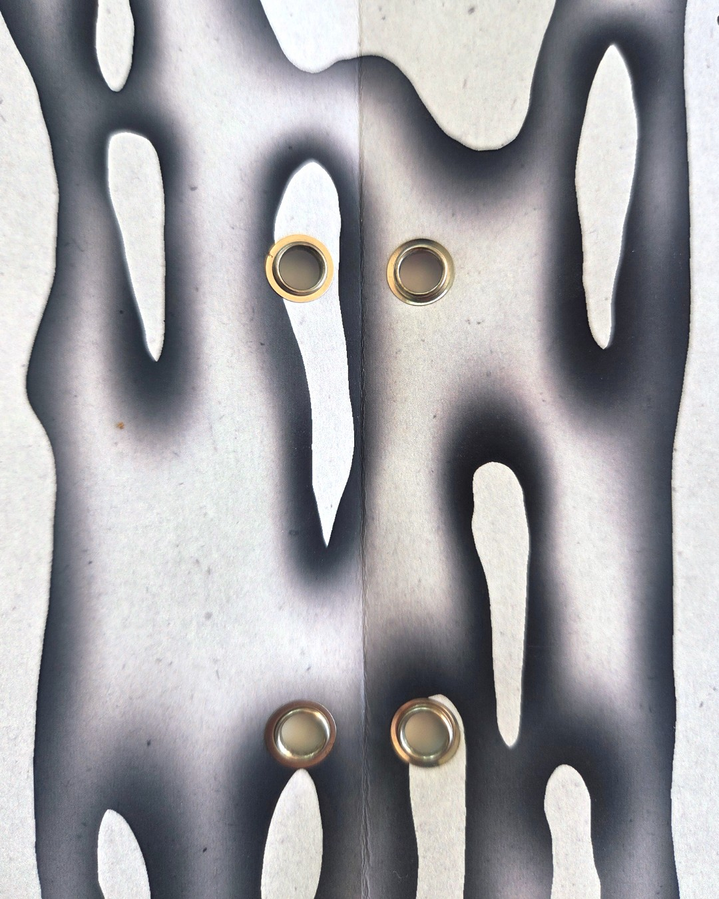
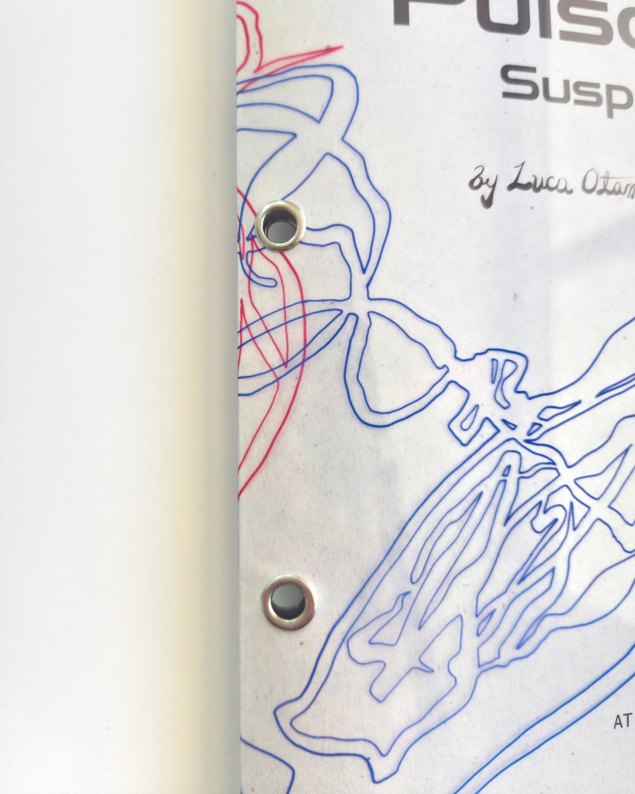
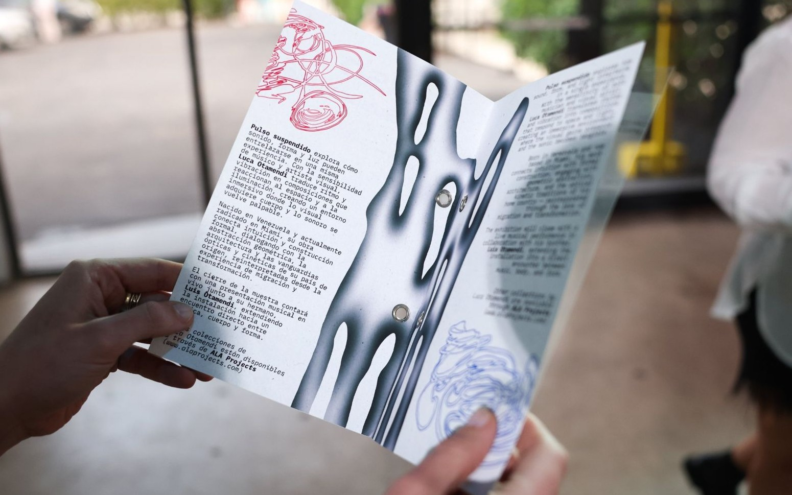
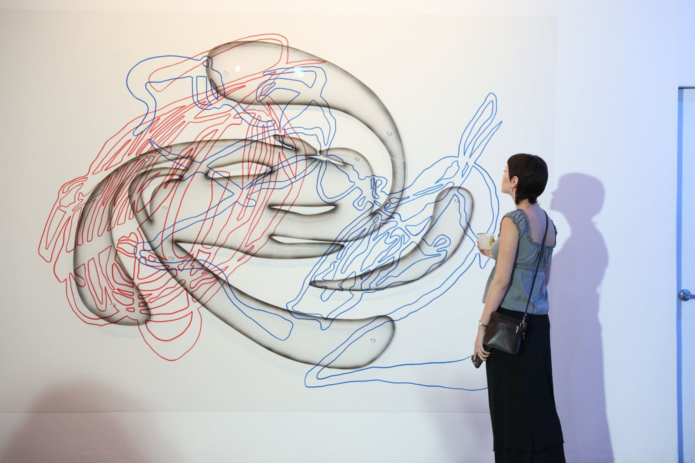
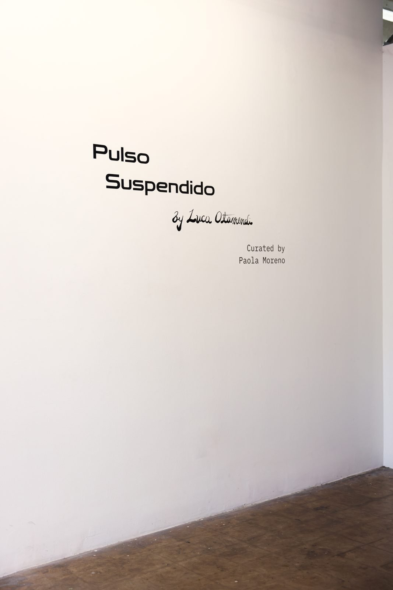
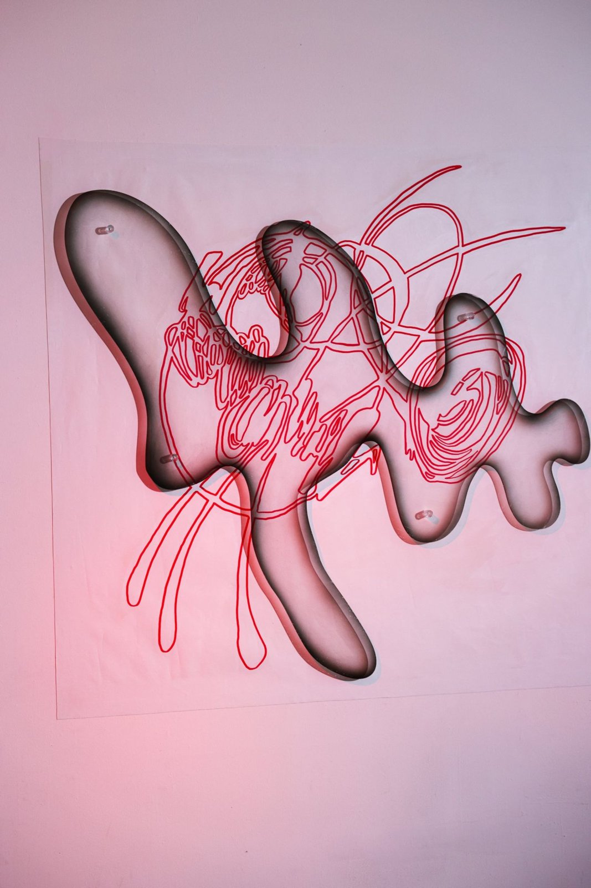
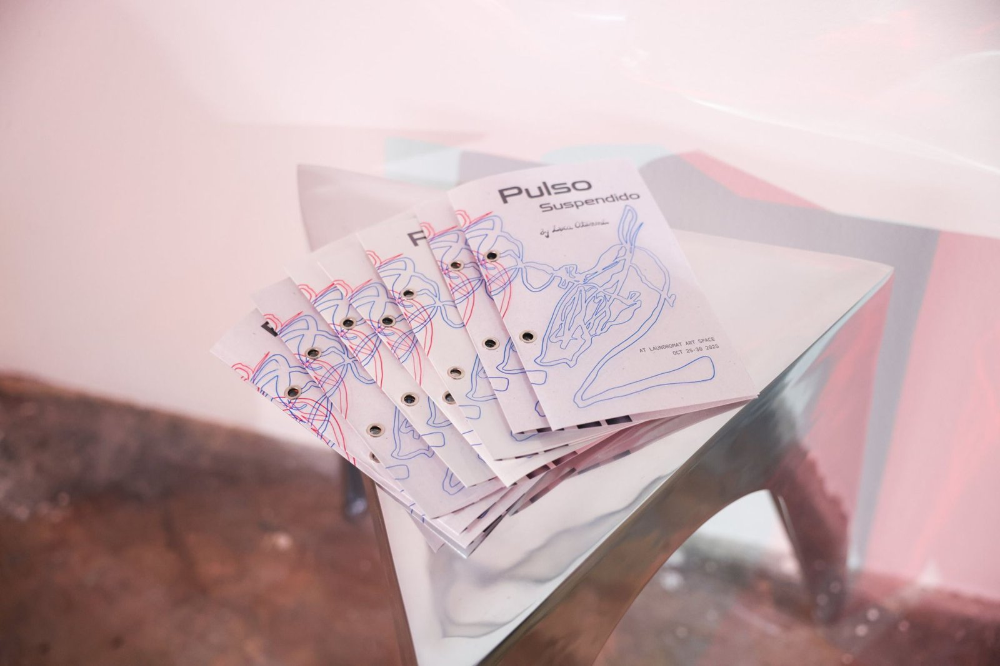

// The zine
A zine made for Luca Otamendi’s solo show at Laundromat Art Space in 2025: a translucent cover, silver eyelet binding, and the text in Spanish and English, one on each side.
// Process
Folded, punched and bound by hand in the studio
// Binding
Eyelets
Metal eyelets hold the pages and the clear cover together. The pages lie flat and the cover can swing open.



// From the show
The zine takes its look from the Luca's work and exhibition installation.
Red and blue line drawings floating over soft shapes creating creating a space in between the wall and the work.
Show photos: Andrea Ballesta



